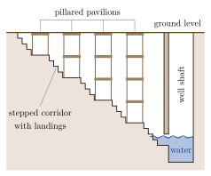
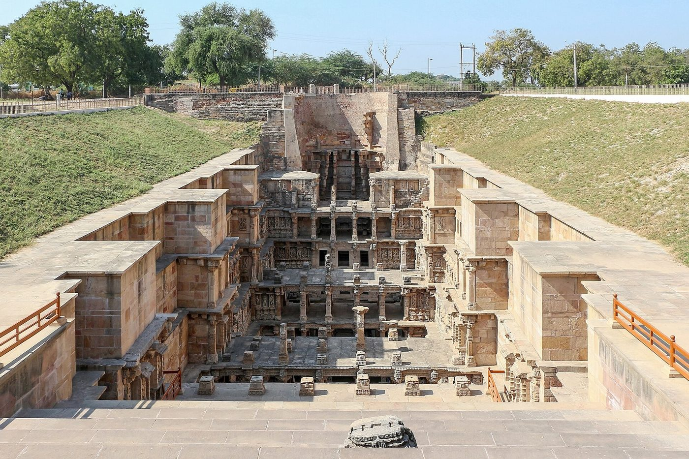
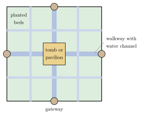

Chapter 9: Water Architecture: Wells, Tanks, Dams and Gardens¶
9.1 Water in Indian Building¶
Over most of South Asia rain falls in a few months of the year, and must be stored, or drawn from the ground, for the rest. Wells, tanks, reservoirs, dams, canals and stepwells were therefore among the most important works a ruler, a community or a private donor could build, and the inscriptions and texts of every religious tradition count them among the most meritorious of gifts. Water structures were also places of ritual: bathing in a sacred tank or river (tīrtha) purifies, temple tanks are the scene of festivals, and stepwells contain shrines. This chapter surveys the main types, from the Harappan reservoirs to the Mughal gardens (Agarwal and Narain 1997; Livingston 2002).
9.2 Early Reservoirs and Dams¶
Water management is visible in the earliest cities of South Asia. Mohenjo-daro had several hundred brick-lined wells, many of them inside houses, and an extensive network of covered street drains with soak pits; the Great Bath on the citadel mound, a watertight brick tank sealed with bitumen and reached by flights of steps, may have had a ritual purpose (Kenoyer 1998).
The Harappan city of Dholāvīrā in Kachchh, with its reservoirs, dams and channels, shows that rainwater harvesting on a large scale was practised in the 3rd millennium BCE (Chapter 8).
The best-documented early historic water work is the Sudarśana lake near Junāgaḍh in Gujarat, known from inscriptions on a rock that also bears the edicts of Aśoka. The Sanskrit inscription of the Western Kṣatrapa ruler Rudradāman (dated 150 CE) records that the lake was made under Candragupta Maurya by his provincial governor Puṣyagupta, provided with conduits under Aśoka by the governor Tuṣāspha, and repaired by Rudradāman after a storm breached the dam. A later inscription records a further repair in the reign of the Gupta emperor Skandagupta in the 450s. Together they give a unique record of the construction, maintenance and failure of an embankment dam over more than seven centuries.
In the 11th century the Paramāra king Bhoja is credited with the creation of a great lake near Bhopal by damming the Betwā; the huge unfinished temple at Bhojpur stands beside the remains of its dams.
9.3 Tanks¶
9.3.1 Irrigation Tanks of the South¶
In the peninsula, where rivers are seasonal, the commonest water work is the irrigation tank (Tamil ēri, Kannada kere, Telugu ceruvu): an earthen embankment (Tamil karai) built across a shallow valley to hold back the monsoon run-off. A sluice (maḍai) releases water into channels (vāykkāl) that serve the fields below; a surplus weir (kalingal) lets excess water flow on, often into the next tank downstream, so that whole valleys are occupied by chains or cascades of tanks. Tamil Nadu alone has tens of thousands of tanks; many are known from inscriptions of the Pallava and Chola periods.
Some tanks are very large. The Vīranam tank (Vīranārāyaṇa ēri), on the northern edge of the Kāverī delta and fed from the Kollidam, attributed to the Chola period in the 10th century, has an embankment many kilometres long and still supplies water, now partly to the city of Chennai. In Karnataka, Andhra and Telangana, the Hoysaḷa, Kākatīya and Vijayanagara kings built great tanks, such as those at Ramappa and Pakhal in Telangana, which irrigated wide areas and were recorded in inscriptions as acts of royal merit.
Inscriptions show how tanks were built and maintained. The famous inscriptions of 919 and 921 CE at Uttaramērūr, a brāhmaṇa village (brahmadeya) near Kāñcīpuram, set out rules for choosing by lot the members of the village’s committees, including a tank committee (ēri vāriyam). They are often cited as evidence of early democracy. But eligibility was restricted to men of the village who owned land and a house and had Vedic learning: in effect to brāhmaṇa landholders. The work of maintenance was done by others. David Mosse’s study of tank irrigation in Tamil Nadu shows how the management of water was bound up with caste, kingship and temple honours, and how this changed under colonial rule (Mosse 2003).
9.3.2 Temple Tanks¶
Most large South Indian temples have one or more tanks (puṣkariṇī, kalyāṇī, Tamil kuḷam), square or rectangular, with steps on all sides and often a pavilion in the middle. They are used for ritual bathing, for the water used in worship, and for festivals in which the deity is taken on a raft round the tank (teppam). Examples include the Tank of the Golden Lotus in the Mīnākṣī temple at Madurai, associated in Tamil legend with the assembly of poets, and the very large Teppakkuḷam at Madurai, about three hundred metres on each side, built in the 17th century. At Vijayanagara the royal centre contains a fine stepped tank built of dressed schist blocks, many marked with masons’ signs, which was excavated in the 1980s. In the North, tanks (kuṇḍa) were built at temples and pilgrimage places, such as the stepped tank of the Sun temple at Moḍherā (Chapter 5).
9.3.3 Tanks of the Sultanates¶
The rulers of Delhi built reservoirs to supply their cities: the Ḥauẓ-i Shamsī of Iltutmish (c. 1230) at Mehrauli, and the Ḥauẓ-i ʿAlāʾī (Ḥauẓ Khāṣ) of ʿAlāʾ al-Dīn Khaljī, on whose bank Fīrūz Shāh Tughluq built a madrasa in the 14th century. Fīrūz Shāh also cut or restored canals from the Yamunā and the Sutlej, the ancestors of the later Western Yamunā canal (Asher 1992).
9.3.4 Lakes and Reservoirs¶
In central and western India, rulers created large artificial lakes by damming valleys. The Candella kings of Bundelkhand (10th–13th century) built many embanked tanks around their towns and fortresses, which still supply water and irrigation in a region of hard rock and unreliable rain. In Rajasthan, the lakes of Udaipur, among them the Pichola, enlarged in the 14th and 16th centuries, and the Fateh Sagar, together with the Gaḍīsar tank of Jaisalmer (14th century) and the lakes of Ajmer and Bundi, were central to the life and the architecture of their cities, lined with steps (ghāṭs), temples, pavilions and palaces. The great embankment of the Rāj Samand near Kankroli (17th century) carries a long series of carved marble pavilions and steps, with a long Sanskrit inscription. In the Deccan, the Quṭb Shāhī ruler Ibrāhīm Quli Quṭb Shāh built the Hussain Sāgar (1562), which later supplied the city of Hyderabad, founded in 1591. Many of these lakes are now threatened by silting, encroachment and pollution.
9.3.5 Water and Pilgrimage¶
Many of the greatest gatherings of Indian religious life take place at water. The Kumbh Melā is held in rotation at four places on sacred rivers, Prayāgrāj (Allahabad), at the confluence of the Gaṅgā and Yamunā, Haridwar, Ujjain and Nashik, at intervals determined by astrological calculation, and draws millions of pilgrims to bathe at auspicious moments. Pilgrimage towns throughout India are organised around their tanks, ghāṭs and river fronts (Chapter 8), and the temporary cities built for such gatherings, with their roads, bridges, water supply and camps, are themselves remarkable feats of planning.
9.4 Stepwells¶
9.4.1 Form and Function¶
The stepwell (Gujarati vāv, Hindi bāolī or baoṛī) is a well that can be reached on foot by a long flight of steps, punctuated by landings and pavilions, descending to the water table. It is most characteristic of Gujarat and Rajasthan, where the water table falls sharply in the dry season and the steps allow access to water at any level. Stepwells were built by rulers, queens, nobles and merchants, Hindu, Jain and Muslim, as charitable works; many stood on trade routes and served travellers as well as local people. Their cool, shaded galleries were also places of rest and gathering, and many contain shrines of goddesses and of Viṣṇu (Jain-Neubauer 1981; Livingston 2002).
Texts of western India, such as the Rājavallabha of Maṇḍana, classify stepwells as nandā, bhadrā, jayā and vijayā according to the number of their entrances, from one to four. Most surviving examples consist of a long stepped corridor, roofed at intervals by pillared pavilions several storeys high, leading to a cylindrical well shaft at the far end (Figure 9.1).

9.4.2 Rāṇī kī Vāv, Pāṭaṇ¶
The “Queen’s stepwell” at Pāṭaṇ, the Caulukya capital in Gujarat, was built in the later 11th century and is traditionally attributed to Queen Udayamatī in memory of her husband Bhīma I. It is the largest and most richly sculptured of the Gujarati stepwells: its stepped corridor (Figure 9.2, left) is over sixty metres long and descends some twenty-seven metres, in seven levels, to the well. Its walls carry hundreds of sculptures, chiefly of the incarnations of Viṣṇu, of goddesses and of celestial women. Long buried in silt, it was excavated and restored by the Archaeological Survey of India in the late 20th century and was inscribed as a UNESCO World Heritage Site in 2014.


9.4.3 Chānd Baoṛī, Ābhāneri¶
The stepwell at Ābhāneri in Rajasthan, of the 8th or 9th century, is a deep square shaft with flights of steps on three sides arranged in a zigzag pattern (Figure 9.2, right) of extraordinary regularity, said to number some 3,500, descending about twenty metres in thirteen stages; the fourth side has pavilions. Local tradition credits it to a king named Cānd. It stands beside the ruined temple of Harṣat Mātā.
9.4.4 Stepwells of the Sultanate Period¶
Stepwell building flourished under the sultans of Gujarat. The stepwell at Aḍālaj near Ahmadābād (1499), built according to its inscription by Queen Rūḍā, combines a Hindu and Jain sculptural vocabulary with Islamic geometric ornament; the Dāḍā Harir stepwell in Ahmadābād, of the same year, was built by a lady of the sultan’s household. In Delhi, the Rājon kī Bāolī at Mehrauli (early 16th century) and the Agrasen kī Bāolī are fine examples, and stepwells continued to be built in Mughal and Rajput territory into the 18th century.
9.4.5 Decline and Revival of Stepwells¶
With the introduction of piped water and tube-wells in the 19th and 20th centuries, most stepwells fell out of use; many silted up, became dumps, or were filled in as hazards. Some, such as the Rāṇī kī Vāv, were rediscovered under silt and excavated. Since the 1990s, stepwells have attracted renewed interest from conservationists, photographers and architects, and several have been cleaned and restored, both as monuments and, in some places, as sources of water and points of groundwater recharge (Livingston 2002).
9.5 Rivers and Canals¶
9.5.1 The Grand Anicut (Kallaṇai)¶
The Kallaṇai (“stone dam”), known as the Grand Anicut, diverts the waters of the Kāverī at the head of its delta into channels serving the Thanjavur plain. Tamil tradition, based on later inscriptions and literature, attributes its construction to the early Chola king Karikāla, placed in about the 2nd century CE. The structure has been repaired and rebuilt many times, especially in the 19th century, when British engineers, including Arthur Cotton, studied it and drew on its example for their own works, such as the barrage on the Kollidam (1836). It is a diversion weir rather than a storage dam: a low, massive barrier of stone that raises the level of the river enough to divert its water. It is among the oldest water-diversion works in the world still in use, although little of the original fabric can now be identified.
9.5.2 Ghāṭs and River Architecture¶
Along the great rivers, flights of stone steps (ghāṭ) give access to the water for bathing, washing, ritual and cremation. The ghāṭs of Vārāṇasī, built largely in the 18th and 19th centuries by Maratha, Rajput and other rulers and nobles, are the most famous (Chapter 8), but similar riverfronts line the Narmadā at Maheshwar, the Kṣiprā at Ujjain, the Godāvarī at Nashik and the Gaṅgā at Haridwar, with temples, palaces and memorials (chhatrīs) above them. The ghāṭs must withstand seasonal floods and the scouring of the current, and many have been rebuilt repeatedly.
9.5.3 Water at Vijayanagara¶
The Vijayanagara capital (Chapter 8) depended on a system of dams (anicuts) across the Tuṅgabhadrā, canals cut along the contours, aqueducts carried on stone pillars, and storage tanks, together with large reservoirs outside the city that held back the run-off of the surrounding hills. Several of the canals built in the Vijayanagara period are still used for irrigation. Within the royal centre, stone channels and aqueducts carried water to the palace enclosures, the stepped tanks and the bath known as the “Queen’s bath” (Fritz and Michell 1991).
9.5.4 Community Systems¶
Many forms of water harvesting were developed and managed by local communities, adapted to very different environments (Agarwal and Narain 1997) (Table 9.1):
| System | Region | Form |
|---|---|---|
| ēri / kere | Tamil Nadu, Karnataka | Irrigation tanks, often in cascades |
| vāv / bāolī | Gujarat, Rajasthan | Stepwells giving access to groundwater |
| kuṇḍ, ṭāṅkā | Western Rajasthan | Covered cisterns collecting rainwater from a prepared catchment |
| johaḍ | Rajasthan | Earthen embankments holding run-off and recharging groundwater |
| āhar–pyne | South Bihar | Embanked catchment basins fed by channels |
| phaḍ | Maharashtra (Tapi basin) | Community-managed diversion of river water |
| kuhl | Himachal Pradesh | Gravity-flow channels from mountain streams |
| surangam | Northern Kerala, Karnataka | Horizontal tunnels driven into laterite hillsides to tap groundwater |
| zabo | Nagaland | Combined system of forest, ponds, cattle-yards and terraced fields |
Many of these systems declined under colonial and post-colonial water policies, which favoured large canals, dams and tube-wells. Since the 1980s, organisations such as the Centre for Science and Environment and many local groups have documented and revived them; in Alwar district of Rajasthan, for example, the revival of johaḍs by the Tarun Bharat Sangh is credited with restoring the seasonal flow of small rivers.
9.5.5 Lifting Water¶
Water was lifted from wells by rope and bucket, by the counterpoised lever (ḍhenklī), by bullock-drawn leather bags (mhoṭ, charsā) and by pot-wheels (Sanskrit araghaṭṭa, ghaṭīyantra), on which pots tied to a rope or wheel are raised by a wheel turned by animals. The geared pot-wheel known as the “Persian wheel” became widespread in the Sultanate and Mughal periods.
9.6 Finding Water: The Bṛhatsaṃhitā¶
Chapter 54 of Varāhamihira’s Bṛhatsaṃhitā, called dakārgala (“water-bar”), explains how to find underground water (Bhat 1981). Its premise is that water runs beneath the earth in veins, like the veins of the body. It lists signs of water: particular trees and shrubs growing in dry places, termite mounds near certain trees, the colour and texture of soil and rocks, frogs, fish and other animals, and steam rising from the ground. For each sign it states the direction and distance from the indicator at which to dig, the depth, measured in puruṣas (the height of a man with arms raised), and the kind of water and rock to be met. The chapter also describes how to break hard rock and how to purify water.
Some of these signs reflect real relationships: deep-rooted trees in dry country often do indicate groundwater, and termite mounds need moisture. Others are omens. The chapter is an interesting record of empirical observation mixed with traditional lore, but the precise depths it gives are not reliable guides, and there are no published systematic tests that confirm them.
9.7 Gardens and Water¶
Sanskrit literature describes royal pleasure gardens with pools, fountains and water-machines (yantra), and Bhoja’s Samarāṅgaṇasūtradhāra, in its chapter on machines, describes water devices, including a pavilion with showers of water (dhārāgṛha). Few early gardens survive. The great surviving gardens of South Asia are those of the Mughals and their contemporaries (Ruggles 2008). The chahār bāgh (“four gardens”), a walled garden divided into four by raised walkways and water channels, came to India from Iran and Central Asia with Bābur, who complained in his memoirs about the lack of running water in Hindustan. The Mughals used it for palace gardens and for tombs, such as Humāyūn’s tomb and the Tāj Mahal (Chapter 6). In Kashmir, the Mughal emperors and nobles built terraced gardens on the slopes above the Dal lake, in which water flows down from terrace to terrace over carved cascades (chādar) and through rows of fountains, past pavilions placed across the central channel. The Shālīmār Bāgh was laid out by Jahāngīr in about 1619 and extended by Shāh Jahān; the Nishāt Bāgh, with twelve terraces descending to the lake, was built by Āṣaf Khān, Nūr Jahān’s brother, in the 1630s; and at Vernāg and Achabal, gardens were built around great natural springs, the source of the Jhelum at Vernāg being enclosed in an octagonal tank with arcades. Jahāngīr’s memoirs record his delight in these places. At Agra, Ebba Koch has reconstructed a whole riverfront of gardens along the Yamunā, of which the Tāj Mahal was one (Koch 2006). Rajput palaces, such as those of Amber, Udaipur and Deeg, adopted and adapted these gardens and their fountains (Figure 9.3).

9.8 Baths¶
Bathing was a ritual as well as a practical act, and Indian architecture provided for it in many forms: the bathing platforms of Harappan houses, the steps of tanks and ghāṭs, the bathing pavilions of palaces and the “Queen’s bath” at Vijayanagara. The Sultanates and Mughals introduced the ḥammām, the steam bath of the Islamic world, with a sequence of rooms for undressing, warm and hot bathing, heated by furnaces beneath the floor and supplied by water channels; fine examples survive in the Red Fort at Delhi, at Fatehpur Sīkrī, in the Agra Fort and in the palaces of the Deccan and Rajasthan. Inscriptions and texts also record the building of public baths and drinking-water pavilions (prapā, Persian sabīl) as acts of charity.
9.9 Summary¶
Indian water architecture ranges from village tanks to monumental stepwells and imperial gardens. It was the work of rulers, temples, merchants and communities, Hindu, Jain, Buddhist and Muslim. Its best-known monuments are works of art of the first rank; its humbler structures sustained agriculture for centuries. Both deserve study, and the revival of traditional water harvesting is one area in which historical knowledge has had real practical value. That value is best served by an honest account of how these systems worked, including the social hierarchies within which they were managed, rather than by idealising them.
Further Reading¶
-
Agarwal, Anil, and Sunita Narain, eds. 1997. Dying Wisdom: Rise, Fall and Potential of India’s Traditional Water Harvesting Systems. Centre for Science and Environment.
-
Livingston, Morna. 2002. Steps to Water: The Ancient Stepwells of India. Princeton Architectural Press.
-
Jain-Neubauer, Jutta. 1981. The Stepwells of Gujarat in Art-Historical Perspective. Abhinav Publications.
-
Mosse, David. 2003. The Rule of Water: Statecraft, Ecology and Collective Action in South India. Oxford University Press.
-
Ruggles, D. Fairchild. 2008. Islamic Gardens and Landscapes. University of Pennsylvania Press.
-
Koch, Ebba. 2006. The Complete Taj Mahal and the Riverfront Gardens of Agra. Thames and Hudson.
-
Fritz, John M., and George Michell. 1991. City of Victory: Vijayanagara, the Medieval Hindu Capital of Southern India. Aperture.